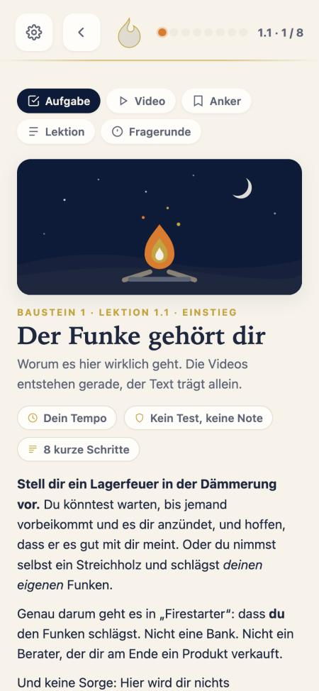

Was bleibt: acht Schritte mit Punkten, fünf Reiter, Titel, Pillen, Text. Was stört: Gold statt Weltfarbe, Zahnrad und Flamme oben, Kästen mit Rand, Reiter mit Rand, nichts hat mit dem neuen Start zu tun.
Firestarter · Innenleben einer Lektion · 22.10.2026
Alle vier zeigen denselben echten Inhalt: Lektion 1.1, Schritt 3 von 8, „Die drei Leitbegriffe". Links das Ist aus der heutigen App. L1 bis L3 lassen den Aufbau stehen (acht Schritte, fünf Reiter Aufgabe, Video, Anker, Lektion, Fragerunde) und ändern nur die Optik. L4 ist Option 2: eine Wisch-Strecke, ein Gedanke je Bildschirm, keine Reiter.
Die acht Schritte von 1.1 heute: Einstieg · Deine Fragen · 1.1.1 Willkommen am Feuer · 1.1.2 Die unbequeme Eröffnung · 1.1.3 Die Reise · Mitnehmen und Anker · Fazit und Live-Frage · Fragerunde. Das ist Renés Inhaltsstruktur und bleibt in L1 bis L3 unangetastet.

Was bleibt: acht Schritte mit Punkten, fünf Reiter, Titel, Pillen, Text. Was stört: Gold statt Weltfarbe, Zahnrad und Flamme oben, Kästen mit Rand, Reiter mit Rand, nichts hat mit dem neuen Start zu tun.
Das ganze Programm steht auf drei Begriffen, mit R&F in der Mitte.
Du kannst nichts steuern, was du nicht verstehst. Solange Geld, Zinsen und Börse eine Black Box sind, entscheiden andere.
Wissen allein füllt kein Depot. Es wird erst wertvoll, wenn es in Handlung übergeht.
Nicht reich werden um des Reichtums willen, sondern frei werden in deinen Entscheidungen.
Am nächsten am Heute. Oben Zurück, Schrittzeile, Punkte und die fünf Reiter als Pillen ohne Rand. Darunter Video, Serif-Titel, Leitbegriffe als Zeilen ohne Kästen, Kern mit orangem Strich, Aha in Blau. Weiter-Knopf steht fest unten.
Finanzwissen ist die Grundlage. Du kannst nichts steuern, was du nicht verstehst. Solange Geld, Zinsen und Börse eine Black Box sind, entscheiden andere. Vermögensaufbau ist das Ziel: Wissen allein füllt kein Depot, es wird erst wertvoll, wenn es in Handlung übergeht. Selbstbestimmung ist der Sinn: frei in deinen Entscheidungen.
Wie der Start. Die Flamme sagt, was in diesem Schritt kommt und wie lange es dauert. Reiter gibt es nicht mehr sichtbar, weil Aufgabe, Anker und Fragerunde ohnehin eigene Schritte sind. Text wie ein Magazin mit Initial, Merksätze als weiche Karten.
Du kannst nichts steuern, was du nicht verstehst.
Wissen allein füllt kein Depot. Es wird wertvoll, wenn es in Handlung übergeht.
Nicht reich werden um des Reichtums willen, sondern frei in deinen Entscheidungen.
Reiter wandern nach unten. In der Lektion ersetzt die Glas-Leiste die fünf Hauptreiter durch die fünf Lektions-Reiter, mit Symbolen wie beim Start. Oben nur ein dünner oranger Fortschrittsstrich und die Minuten. Inhalt als weiche Karten, Leitbegriffe mit Serif-Nummer.
die Grundlage
Du kannst nichts steuern, was du nicht verstehst. Solange Geld, Zinsen und Börse eine Black Box sind, entscheiden andere.
Wie Duolingo, Babbel, Blinkist. Jeder Schritt zerfällt in Karten mit einem Gedanken. Große Zahl, Symbol, ein Satz Kern, kurzer Text, das Video dazu. Keine Reiter, kein Scrollen: nur wischen. Die nächste Karte lugt rechts hervor.
Ein Feuer, das du selbst entfacht hast, kann dir niemand mehr ausreden. Finanzwissen führt zu Vermögensaufbau, beides zusammen zu Selbstbestimmung.
Der Schluss jedes Schritts ist blau. Aha-Moment groß in Serif, die Flamme fragt nach dem nächsten Schritt. So fühlt sich jeder Schritt abgeschlossen an. Aufgabe, Anker und Fragerunde bekommen dieselbe Kartenform.